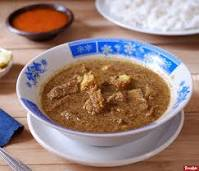

Pallubasa

Pallubasa adalah makanan tradisional Makassar, Sulawesi Selatan.
Seperti Coto Mangkasara (Coto Makassar), Pallubasa juga terbuat dari jeroan (isi dalam perut) sapi atau kerbau.
Proses memasak pun hampir sama dengan Coto Makassar, yakni jeroan direbus dalam waktu lama.
Setelah matang, jeroan ditambah dengan daging itu diiris-iris, kemudian ditaruh/dihidangkan dalam mangkuk.
Dahulu pallubasa untuk bagian daging sapi sirloin dan tenderloin hanya disajikan untuk disantap oleh keluarga kerajaan.
Sementara bagian jeroan disajikan untuk masyarakat kelas bawah atau abdi dalem pengikut kerajaan.
Kini masyarakat menyukai bagian daging sapi yang terletak bagian belakang yang dikenal dengan sirloin.
Beberapa penjual pallubasa juga memberi beberapa pilihan daging sapi atau jeroan untuk dihidangkan.
Yang membedakan dengan Coto Makassar adalah bumbunya yang diracik khusus.
Kemudian kalau Coto Makassar dimakan bersama ketupat, sementara Pallubasa dimakan bersama nasi putih.
Sumber: Wikipedia